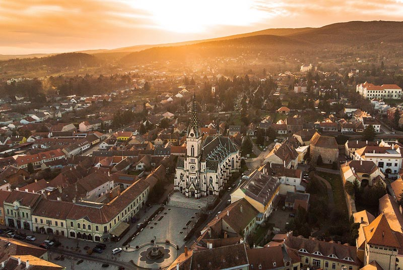
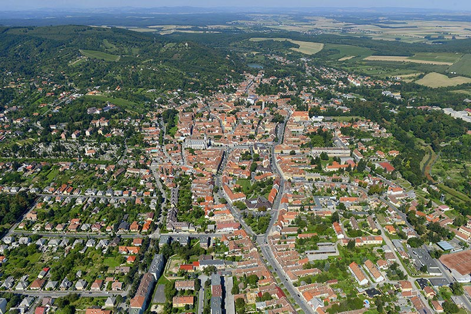
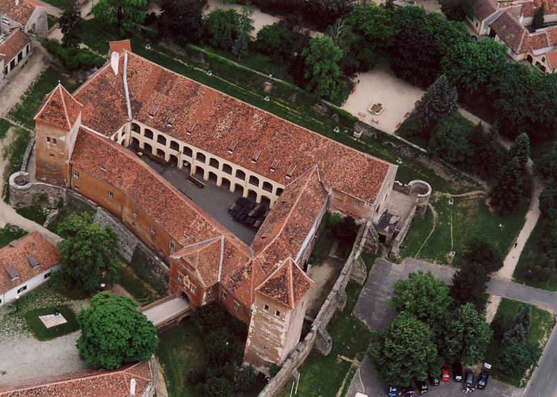
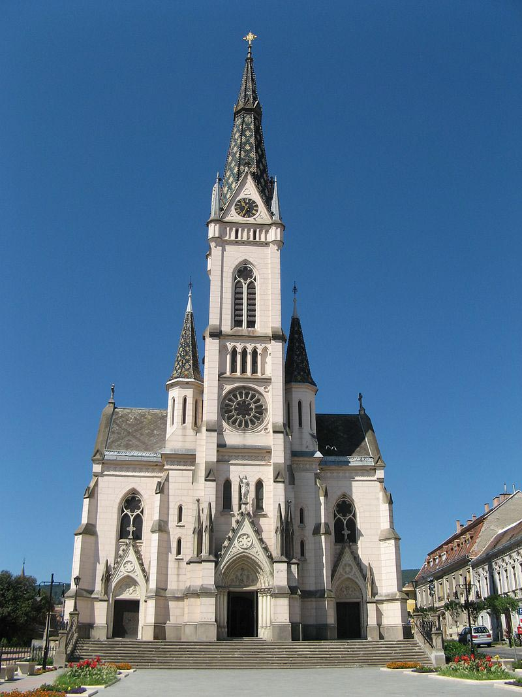
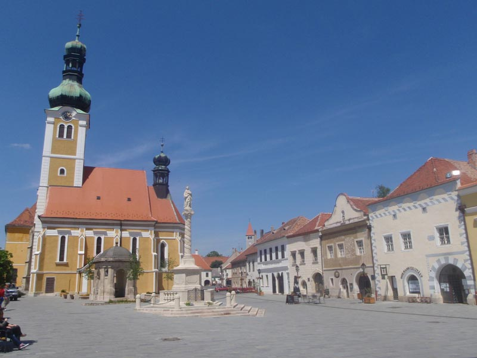
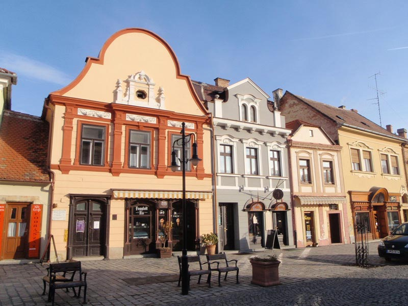
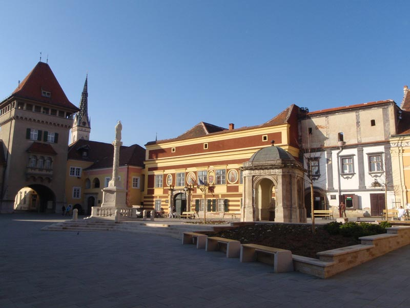

【美景】
克塞格与奥地利接壤，这个城市融合了三种文化：匈牙利，德国和克罗地亚。 克塞格在1328年便获得皇城头衔的城镇，1648年正式成为自由皇城。 1978年，获得希尔德·亚诺斯奖（历史悠久的市中心翻新工程）。 2009年，克塞格山脉附近的石头自然公园协会被授予“匈牙利发展最快的生态旅游目的地”的称号。
【美食】
Goulash牛肉炖汤
Libamáj 鹅肝
Lángos特色油饼
Toltott Kaposzta 圆白菜肉丸
Halászlé 鱼汤
Ujhazi Tyukhuslevesi 家常老鸡汤
Kurtoskalacs 烟囱卷面包
Egri Bikavér埃格尔公牛血葡萄酒
克塞格 克塞格是沃什州管辖的城镇，位于该国西部，与奥地利接壤，面积54.65平方公里，海拔高度274米，人口12,077，其中约七成居民信奉天主教。这个城市融合了三种文化：匈牙利，德国和克罗地亚。 它历史悠久，在匈牙利和奥地利的历史中发挥了重要作用。它是沃什州唯一一个早在1328年便获得皇城头衔，1648年正式成为自由皇城。1532年，米克洛斯船长捍卫了城市，使其免受土耳其人的袭击，阻止了对匈牙利西部和维也纳的占领。城市的发展带来了经济繁荣。由于避免了战争，它成了最富有的城市之一。1978年，获得希尔德·亚诺斯奖（历史悠久的市中心翻新工程）。2009年，克塞格山脉附近的石头自然公园协会被授予“匈牙利发展最快的生态旅游目的地”的称号。匈牙利最大的积雪厚度（151厘米）和最大降水量（1510毫米）也在这里。
 考古挖掘过程中，证实了几种考古学文化的沉淀，包括匈牙利西部的第一种农业文化，新石器时代中期的线饰文化，罗马时代的文化，同时罗马人引进了葡萄种植技术。  景点：克塞格城堡 克塞格城堡的历史可以追溯到802年，分内部和外部城堡，被护城河包围。它确保了克塞格及其周边地区的安全，对不断变化的权力关系的维护和贸易路线的保护。它在1532年与土耳其人的战斗中发挥了最重要的作用，1289年，阿尔伯特亲王占领了这座城堡。1327年在卡罗里·罗伯特经过几次战争，占领了克塞格城堡，并在1336年获得胜利后，以极大的特权帮助城镇居民发展。为了防止奥地利人入室盗窃，在坚固的塔楼的保护下，逐步修建了城墙，并将附近的珍珠溪流的水引入围墙成为护城河。1445年哈布斯堡王朝从该加雷家族手中接管了城堡， 1482年马蒂亚斯·匈雅提夺回了城堡，但1492它被哈布斯堡王朝再次占据。直到1931年，它都是埃斯泰尔哈兹掌握，之后成为国家财产。城堡剧院于1963年进行了翻新，并拥有目前的博物馆和文化功能，自1982年以来一直是萨默城堡剧院的所在地。2011年进行了大型装修，可参观古老的武器和盔甲，酷刑工具。骑士的大厅有关于城堡和匈牙利的历史，高科技3D电影片。城堡的走廊的展览，展示了历史悠久的军事服装和军备，城堡的西塔，除了展览之外，还有城堡集市，自助餐和植物园。 1532年在维也纳最著名的围攻行动，向奥斯曼帝国苏丹苏莱曼进军，其一支庞大的军队遭到尼古拉斯法学团长率领的关于ezerfőnyi的大军的打击，而后者的程度稍稍低一些，但逃离了该地区农奴的保护，脱离了有组织的军队。在第二十五天的战斗中，奥斯曼帝国他的军队部署了所有可能的手段。最终，根据双方的协议，匈牙利人允许在八座塔上悬挂八面土耳其国旗，因此土耳其将军易卜拉欣本可以为苏丹赢得明显胜利，因此他们可以从克塞格的城墙下撤退到南部。苏丹跟随国王谷和各各他山之间的山丘发生了事件。此后被称为苏丹山。随着城市维也纳通过显著奥地利军队保护，费迪南德哈布斯堡升高米克洛什Jurisics男爵军衔为他的英勇勇敢，并捐赠了城市的科塞格给他。然而，法理学死后没有留下儿子后代，因此他被送回皇家会议厅管理。1695年，城堡和庄园归埃斯哈兹（PálEsterházy）所有后来成为家族的财产，直到1931年，家族拥有了克塞格城堡。然后出售，并在1955年之前拥有军事所有权。 在过去的几个世纪中，这个贸易小镇经常被特兰西瓦尼亚，帝国和库鲁克的军队围困，因为它拥有丰富的资源，是一个吸引人的猎物。1777年，这座城堡被大火烧毁，当时大部分防御工事被拆除。现在的纪念碑于1955年至1963年之间进行了修复，修复后的城堡内设有文化机构。 法学城堡的重建工作始于2011年，在整修的几年中，城堡被关闭。城堡于2013年7月2日对外开放，具有更新外观和现代技术设备的互动展览空间，可以了解城堡的历史。1532年的土耳其城市雕像将突出展示。并建立一个黄金厅，以展示与克塞格有关的最有价值的饰物。  景点：克塞格教堂 克塞格教堂建于1892年，新哥特式风格，在新教区教堂，位于克塞格中心主广场上，是继松博特海伊大教堂后的沃什州的第二大教堂。1936年由教堂进行了翻新，1987年由国家进行了翻新。 三间殿的教堂有一个被截断的中殿，其圣所用多边形封闭。入口上方是57米高的塔楼，上面装饰着两座的塔楼。该塔是四个钟的所在地，其中两个钟相对于较大的小镇而言是巨大的。 内部被称为彩绘天花板，墙壁和圆柱画是奥托·科特的作品。当地捐赠的几个玻璃窗描绘了耶稣圣母玛利亚，圣约瑟夫和几个匈牙利圣人，家具是中世纪巴洛克式的。它们是从圣詹姆斯教堂运来的，其雕刻的木制祭坛是在维也纳和蒂罗尔制得的。管风琴制作于1894年，这款21针的双手乐器是里弗兄弟工厂的早期作品之一。从前教区教堂的设施中留下的两个圣杯具有特别的价值：一个是1421年制造的，另一个是1486年制造的。后者是哥特式镀金银色圣杯，是沃尔夫冈·海登的作品。它的特殊功能是茎上的纽扣（节点）的教堂装饰，杯筐上扎有百合花，底座上，艺术家浮雕了圣多萝西的雕像。 它是塔形哥特式教堂的一个很好的例子。避难所上方是一座柱状的中央小教堂，上面是受难耶稣的雕像。在通往山顶的金字塔上是与被钉十字架的耶稣的十字架。  景点：城市中心广场 城市中心广场又叫法学广场，它曾是城市的中心和集市，如今已成为行政中心。广场上设有档案馆，金麒麟药房博物馆，教区，市政厅，喷泉，圣伊姆雷教堂和圣詹姆斯教堂。所谓的 “达尔马提亚大门”，今天的广场形象英雄之门，1880年这座城市的大门一直就在这里，直到1945年，由于其恶劣的条件和狭窄的通道而被拆除。

今天看到的建筑物于1932年被重建。它的下面还有1532年被围困的纪念碑。旁边是将军大厦，现在的城市博物馆。广场于2012年完成翻修，恢复了原有的特色。  景点：市政厅 市政厅是该国最古老的建筑，仍作为市政厅在运作，是司法广场的瑰宝之一。市政厅的历史可追溯到14世纪。市政厅历史上所发生的一系列大火，促使人们建造了直墙式高阁楼墙，其中最严重的一场大火在1720年。1712年随着建筑的翻新，匈牙利，城市和法学家的徽章被放置在立面上。  景点：英雄门及城市博物馆 法学广场的大门建于1932年，很快成为这座城市的象征。从顶部可欣赏到老城区和山脉的美景。 英雄之门（或塔）最初是在XIV世纪，是世纪建筑。所谓的南门，也被称为下塔，是城市的主要入口，它于1880年被拆除。英雄塔是为纪念1932年土耳其围攻它400周年而建，短时间内成为这座城市的象征。这座27米高的塔楼具有不拘一格的风格。从顶部的全景阳台上，可以欣赏到舒适的街道，广场，房屋和克塞格山脉。